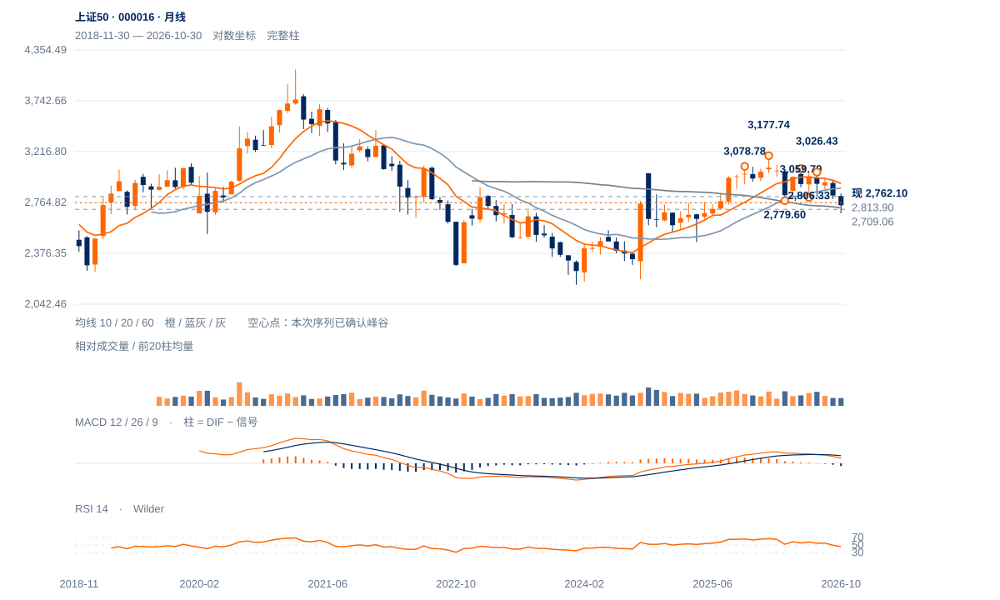

近期偏2716—2814防守区间，2—6周只有越过中峰并形成保持，才从守边转为较完整上行。
上证50 · 2026-11-23完整收盘
2762整理还能否守住2716较高谷？
2,762.10-0.86%
较高谷与相对防守
分期限展望
2716较高谷未破，未来2—6周先按2716—2814区间看待。突破2814并回测保持，可打开重返9月高区的空间；若失2716，防守优势转弱。
未来1—3个月更接近宽区间下部修复，2677大谷比短线2777更重要。2677保持且周谷逐渐抬高，才有条件重返2912—2957供给区；失守则应改判更大级别调整。

长期背景
2021年4110仍远在上方；今年3178后高点递降。2670半幅回撤、2677实际低点与长期均衡相邻，长期防守区仍有意义。完整10月20月均衡2,884.82；本月价格变化尚未成为已完成月线确认。 当前日收盘2,762.10与已完成月线背景分开判断；11月仍未结束，不提前计为完整月级反转。
中期结构与新证据
完整周线已更新至11月20日：2026-09-04高2,956.55（2026-09-18确认）；2026-10-23低2,676.64（2026-11-06确认）；2026-11-05高2,813.90（2026-11-20确认）。最新一周与上次11月13日背景分别保存；23日仅为本周进行中观察。23日2762.10仍高于2715.72与2676.64，较高低点链条保留；2776.59回抽线未持续保持，上证破谷并未同步变成上证50破底。相对防守是结构差异，不能代替2813.90高点的绝对价格突破。
确认与失效
2777先保持；2814原两日加回测条件仍计。
2716日收下破破坏较高谷；2677为更大底区边界。
主要反方
权重防守仍可能先于大盘恢复，但较高谷一旦失守，原相对优势对绝对下跌保护有限。
波动与量能
RSI14 44.11；ATR14 38.91；相对量1.13倍